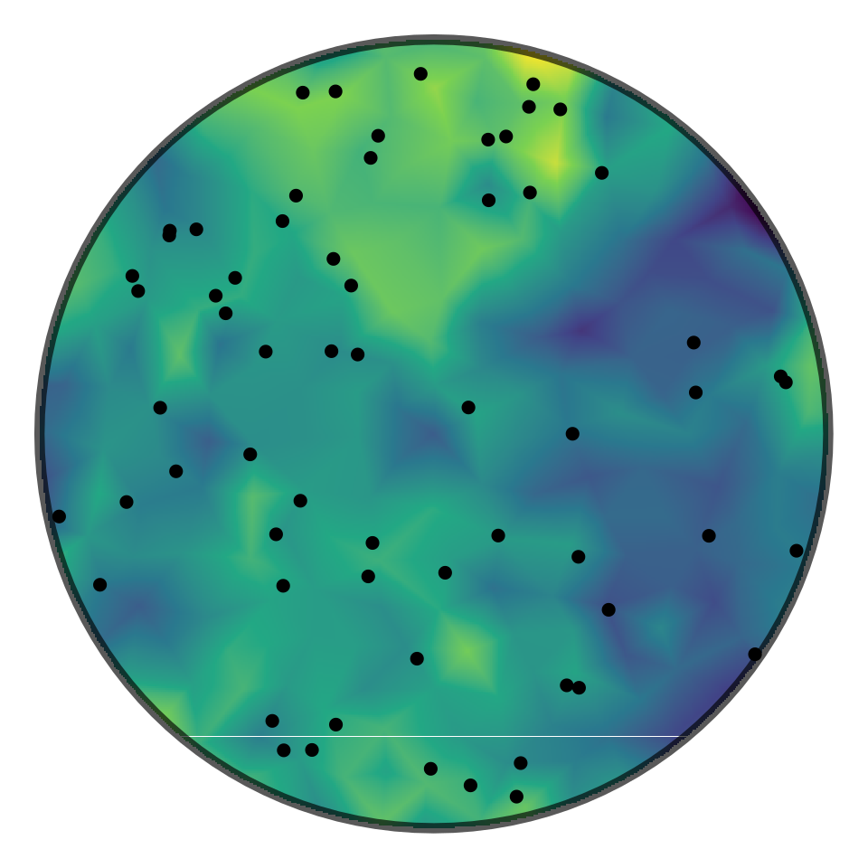
5 Spatial and spatiotemporal log-Gaussian Cox processes
5.1 The model and your data
A log-Gaussian Cox process (LGCP) is a model for the locations of events in a study region. Unlike a Hawkes process, events do not cause other events. Instead, the intensity (the expected number of events per unit area) varies smoothly over space because of some unobserved environmental “surface”: events are more common where the surface is high and rarer where it is low. In the simplest case the intensity at location \(s\) is
\[\lambda(s) = \text{exp}(\beta_0 + G(s)), \tag{5.1}\]
where \(\beta_0\) is the intercept, the log intensity at an “average” location, and \(G(s)\) is a Gaussian random field, a smooth random surface with mean zero. Because \(G(s)\) is estimated from the data, the model can capture spatial clustering of events without you having to explain where it comes from. Covariates (e.g., population density) can be added to the log intensity, \(\beta_0 + \beta_1 x_1(s) + ... + G(s)\), and the random field then captures the spatial variation that the covariates do not explain.
Plotted below is a realisation of an LGCP within a disc shaped region, overlain on the random field \(G(s)\): events are more common where the field is high (yellow).
The random field is described by two parameters, which stelfi reports on an interpretable scale:
- the range \(r\), the distance at which the correlation between values of the field drops to about 0.1. A small range means the intensity varies over short distances (small “hot spots”), a large range means it varies smoothly over large distances; and
- the standard deviation \(\sigma\) of the field, how much the log intensity varies from place to place. For example \(\sigma = 1\) means that, on the log scale, the intensity typically varies by \(\pm 1\) from \(\beta_0\), i.e., by a factor of about \(e^{1} \approx 2.7\).
Internally the field is parameterised by \(\tau\) and \(\kappa\), so get_coefs() reports log_tau and log_kappa (the parameters that are actually estimated) along with range \(= \sqrt{8}/\kappa\) and stdev \(= 1/\sqrt{4\pi\kappa^2\tau^2}\). Following Lindgren, Rue, and Lindström (2011), the field has a Matérn covariance function with smoothness \(\nu = 1\), and it is represented using the stochastic partial differential equation (SPDE) approach on a triangulation (a mesh) of the study region.
5.1.1 Meshes
The SPDE approach represents the continuous random field \(G(s)\) by its values at the nodes (vertices) of a triangulation of the study region, and interpolates linearly between nodes. The mesh therefore controls both how finely the field can vary in space and how much computation is needed. In stelfi (and inlabru) the mesh is built using the fmesher package, the key arguments of fmesher::fm_mesh_2d() are:
loc: locations (usually the observed events) that the mesh is built around, so there are mesh nodes close to the data;boundary: (optional) a polygon the mesh should follow, typically the study region (converted usingfmesher::fm_as_segm());max.edge: the largest allowed triangle edge length. A vector of length two,c(inner, outer), gives a finer mesh inside the region and a coarser mesh in an outer extension, which reduces the inflated variance of the field near the edge of the mesh; andcutoff: the minimum allowed distance between nodes. Locations closer together than this share a node, which avoids lots of tiny triangles where events are clustered.
There is a trade-off. A mesh that is too coarse cannot capture spatial variation at a scale smaller than its triangles, while a mesh that is too fine is slow and memory-hungry and can make fitting unstable. A common rule of thumb is that max.edge (inner) should be no more than about a fifth of the range of the field. Since the range is not known before fitting, it is good practice to fit the model using a few meshes and check that the conclusions do not change, see ?sec-mesh-compare. The mesh can be plotted using mesh_2_sf() and ggplot2 (e.g., Section 5.3.2).
Note that the mesh is only used to represent the random field (and to approximate the integral of the intensity over the study region). The study region itself is given by the sf argument of fit_lgcp(), and the parts of the mesh outside it do not contribute any area.
Checking the quality of a mesh
Long thin triangles, or triangles that vary a lot in size, can cause numerical problems. The function meshmetrics() returns an sf object with geometric summaries of each triangle, including its area, its interior angles, the radius-edge ratio (circumradius divided by the shortest edge) and a quality measure, \(\frac{4\sqrt{3}|A|}{\sum_{i = 1}^3 L_i^2}\) where \(A\) is the area and \(L_i\) the edge lengths, which is 1 for an equilateral triangle and approaches 0 for a degenerate one. Plotting these is a quick way to spot “bad” triangles. Below this is done for the example mesh horse_mesh (see ?sec-data).
data("horse_mesh", package = "stelfi")
metrics <- meshmetrics(horse_mesh)
patchwork::wrap_plots(
ggplot(metrics, aes(fill = area)) + geom_sf() + theme_void(),
ggplot(metrics, aes(fill = quality)) + geom_sf() + theme_void(),
nrow = 1)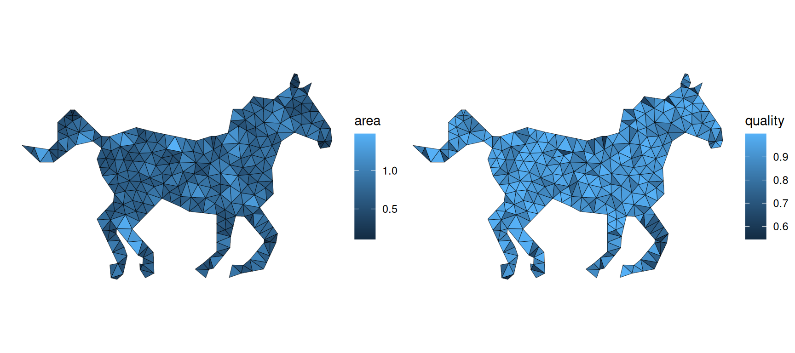
5.1.2 What your data need to look like
fit_lgcp() needs three things:
locs, a data frame of event locations with columns namedxandy(andtfor a spatiotemporal model, Section 5.5);sf, ansfpolygon of the study region; andsmesh, a mesh (Section 5.1.1).
Things to be aware of:
- Use a projected coordinate system. The field is defined in terms of distances, so longitude and latitude (in degrees) should be projected to a planar coordinate system (e.g., UTM) using
sf::st_transform(). Working in kilometres rather than metres keeps the numbers well scaled and makes the parameters easy to interpret: the intensity is then per km\(^2\) and the range is in km. The events, the study region and the mesh must all be in the same coordinates (it is often easiest to drop the CRS once everything is projected, see Section 5.3.2). - The study region should be where events could have been observed. The model assumes that every part of the study region was observed with equal effort. If, for example, sightings can only be made where there are people, then the intensity estimates the rate of reported events, and the random field will pick up variation in observation effort as well as variation in the underlying process. Including a covariate that describes effort (e.g., population density) can help. Events outside the study region are ignored.
- Events are summarised by mesh node.
stelficounts the number of events closest to each mesh node (i.e., in each cell of the “dual” mesh) and models these counts. Detail at scales smaller than the mesh triangles is therefore lost, which is another reason to check that results are not sensitive to the mesh. - Duplicate locations are allowed for fitting (unlike tied times in a Hawkes process), but they need to be jittered for some of the goodness-of-fit checks (Section 5.4).
- Covariates must be given at the mesh nodes, as a matrix with one row per mesh node (
smesh$nrows) and one column per covariate. If your covariate is a raster or is only known at some locations, it needs to be extracted or interpolated at the mesh nodes, see Section 5.3.2. - Events do not interact. An LGCP describes clustering caused by a smooth environment, not clustering caused by events triggering each other. If the latter is plausible, consider a spatiotemporal self-exciting model (Chapter 8).
- Number of events. The field parameters (in particular the range) are hard to estimate with few events or when the range is large relative to the study region. A few hundred events is a reasonable minimum.
5.2 A simulated example
Data were simulated from an LGCP (using spatstat, Baddeley, Rubak, and Turner (2015)) within a disc of radius 1, with intercept \(\beta_0 = 4\), field standard deviation \(\sigma = 1\), and range \(r =\) 0.566. The data are a data frame of 272 event locations:
head(locs) x y
1 -0.1800667 0.8802885
2 0.5430666 -0.5046758
3 0.2112133 0.8551978
4 0.1208994 0.9408004
5 0.2303162 -0.8321345
6 -0.4731538 0.5615277The study region is a disc of radius 1, which is converted to an sf polygon. The plot below shows the events and the true (simulated) random field.
sf <- sf::st_sf(geometry = sf::st_geometry(sf::st_as_sf(spatstat.geom::disc())))Coordinate system already present.
ℹ Adding new coordinate system, which will replace the existing one.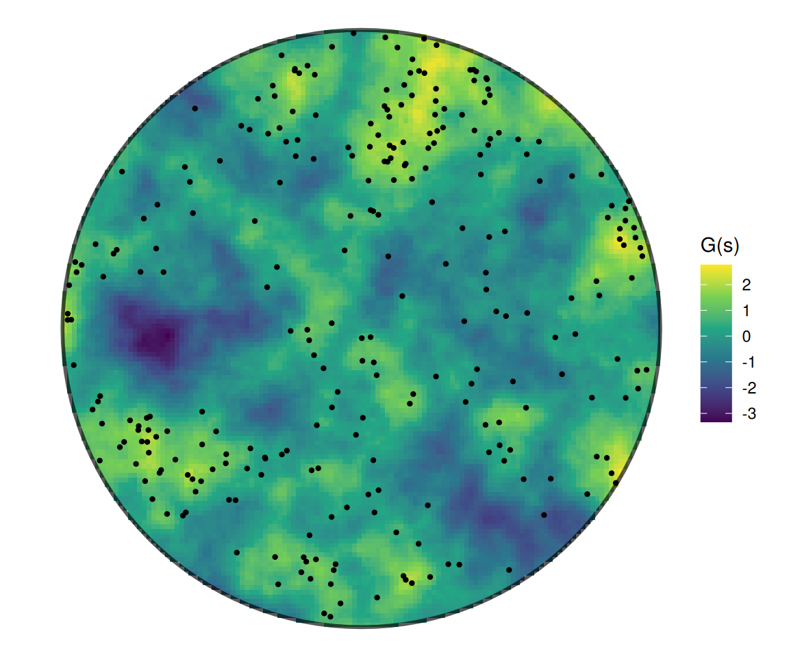
5.2.1 Fitting the model using stelfi
First a mesh is built around the events (Section 5.1.1). Here max.edge is 0.1 inside the region, about a fifth of the true range.
smesh <- fmesher::fm_mesh_2d(loc = locs[, 1:2], max.edge = c(0.1, 0.3), cutoff = 0.03)
smesh$n ## number of mesh nodes[1] 1124The model is fitted using fit_lgcp() with starting values for \(\beta_0\) (beta), \(\log(\tau)\) (log_tau) and \(\log(\kappa)\) (log_kappa). A sensible starting value for the intercept is the log of the average number of events per unit area.
area <- as.numeric(sf::st_area(sf))
fit <- fit_lgcp(locs = locs, sf = sf, smesh = smesh,
parameters = c(beta = log(nrow(locs) / area), log_tau = log(1), log_kappa = log(1)))
stelfi <- get_coefs(fit)
stelfi Estimate Std. Error
beta 4.1456922 0.1798657
log_tau -3.2271510 0.2588465
log_kappa 2.2036142 0.2577273
range 0.3122680 0.0804800
stdev 0.7850755 0.1059713The estimated random field is extracted using get_fields() and plotted using show_field(). Compare this with the true field above.
get_fields(fit, smesh) |>
show_field(smesh = smesh, sf = sf, clip = TRUE) + theme_void() +
geom_point(data = locs, aes(x = x, y = y), size = 0.8)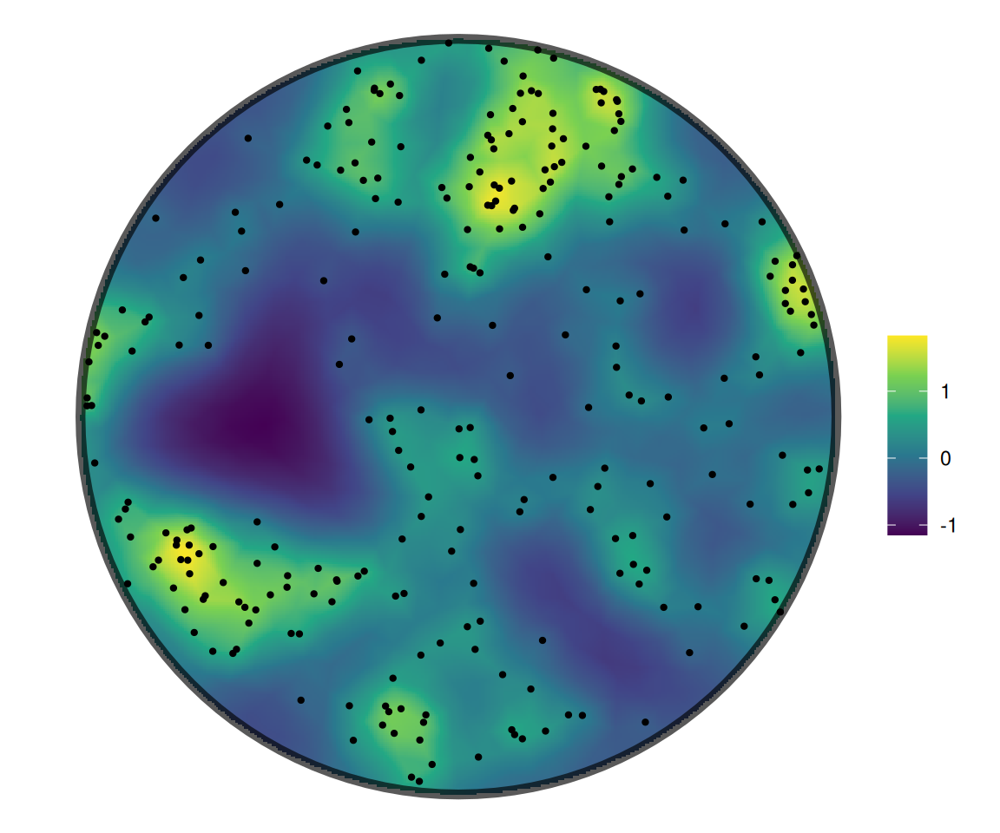
5.2.2 Comparison with inlabru and spatstat
The same model is fitted below using inlabru (Bachl et al. (2019)) and spatstat (Baddeley, Rubak, and Turner (2015)). When comparing the results bear in mind that:
stelfiuses maximum likelihood (the field is integrated out using the Laplace approximation) so there are no priors and the estimates have standard errors.inlabruis Bayesian (using INLA), so priors are needed for the field and it reports posterior means and standard deviations. Penalised complexity priors are used viainla.spde2.pcmatern():prior.range = c(0.05, 0.01)means \(P(r < 0.05) = 0.01\) andprior.sigma = c(5, 0.01)means \(P(\sigma > 5) = 0.01\), both deliberately weak. To makeinlabruas close as possible to a maximum likelihood fit, the hyperparameters are not integrated over (int.strategy = "eb"). The same mesh is used for both.spatstatfits the model by minimum contrast, matching the theoretical \(K\) function of the LGCP to the empirical one. This does not use a mesh and does not give standard errors. Its Matérn scale parameter (reported asalphainmodelpar) is \(1/\kappa\), so the range is \(\sqrt{8} \times\) scale, and it reports the variancesigma2rather than the standard deviation.
Note that inlabru requires the geometry column of the study region to be called geometry, which is why sf was created using sf::st_sf(geometry = ...) above.
library(inlabru)
library(INLA)
sf_locs <- sf::st_as_sf(locs, coords = c("x", "y"))
matern <- INLA::inla.spde2.pcmatern(smesh, prior.range = c(0.05, 0.01), prior.sigma = c(5, 0.01))
cmp <- geometry ~ field(geometry, model = matern) + Intercept(1)
fit_bru <- lgcp(cmp, sf_locs, samplers = sf, domain = list(geometry = smesh),
options = bru_options(control.inla = list(int.strategy = "eb")))
bru <- rbind(fit_bru$summary.fixed[, 1:2], fit_bru$summary.hyperpar[, 1:2])
bru mean sd
Intercept 4.1897730 0.1942439
Range for field 0.4284088 0.1123945
Stdev for field 0.7812108 0.1223858ss <- spatstat.model::lgcp.estK(sim, covmodel = list(model = "matern", nu = 1))
ss$modelpar sigma2 alpha mu
0.6509685 0.1252826 4.1359896 | \(\beta_0\) | \(r\) | \(\sigma\) | |
|---|---|---|---|
| Truth | 4.000 | 0.566 | 1.000 |
| stelfi | 4.146 (0.18) | 0.312 (0.08) | 0.785 (0.106) |
| inlabru | 4.19 (0.194) | 0.428 (0.112) | 0.781 (0.122) |
| spatstat | 4.136 | 0.354 | 0.807 |
stelfi and inlabru give very similar estimates, as they fit the same model on the same mesh. spatstat uses a very different method but tells a similar story. The intercept is well estimated by all three, while the range and the standard deviation of the field are much harder to pin down from a single dataset (note the larger standard errors). How well stelfi and inlabru recover the parameters on average over many simulated datasets is explored in Chapter 6.
5.3 Applied examples
5.3.1 Sasquatch sightings in the USA
The sasquatch data (see ?sec-data) are the locations of 972 reported sasquatch (bigfoot) sightings in the contiguous USA between 2000 and 2005, collated by the Bigfoot Field Researchers Organization. This example is also used in Jones-Todd and van Helsdingen (2024).
Preparing the data
The sightings are given as longitude/latitude. They, and the boundary of the contiguous USA (from the maps package), are projected to the Conus Albers projection (EPSG:5070) and converted from metres to kilometres.
data("sasquatch", package = "stelfi")
sf::sf_use_s2(FALSE)
## boundary of the contiguous USA: projected and in km
us <- maps::map("usa", fill = TRUE, plot = FALSE) |>
sf::st_as_sf() |>
sf::st_make_valid() |>
sf::st_transform(crs = 5070)
us_km <- sf::st_sf(geometry = sf::st_union(sf::st_geometry(us)) / 1000)
## sighting locations: projected and in km
locs_sq <- sf::st_transform(sasquatch, crs = 5070) |>
sf::st_coordinates() |>
as.data.frame()
names(locs_sq) <- c("x", "y")
locs_sq <- locs_sq / 1000
head(locs_sq) x y
1 -515.6556 2280.102
2 1532.8509 2407.822
3 -398.2722 2817.326
4 -505.9007 2766.177
5 1734.8802 2163.947
6 -832.7920 1547.099Fitting the model
The mesh has a maximum edge length of 200 km (the contiguous USA is about 4500 km across).
smesh_km <- fmesher::fm_mesh_2d(loc = locs_sq[, 1:2], max.edge = c(200, 500), cutoff = 100)
area_sq <- as.numeric(sf::st_area(us_km))
fit_sq <- fit_lgcp(locs = locs_sq, sf = us_km, smesh = smesh_km,
parameters = c(beta = log(nrow(locs_sq) / area_sq),
log_tau = log(1), log_kappa = log(1)))
coefs <- get_coefs(fit_sq)
coefs Estimate Std. Error
beta -9.937128 0.3865470
log_tau 4.046748 0.1069927
log_kappa -5.662232 0.1818064
range 813.993537 147.9892483
stdev 1.419028 0.1880643From these estimates, the range of the field is around 814 km, so sightings are clustered at a regional scale, and the standard deviation of 1.42 means the intensity of sightings varies by a large factor between regions. The estimated random field and the estimated intensity (expected number of sightings per km\(^2\)) are plotted using show_field() and show_lambda().
get_fields(fit_sq, smesh_km) |>
show_field(smesh = smesh_km, sf = us_km, clip = TRUE) + theme_void()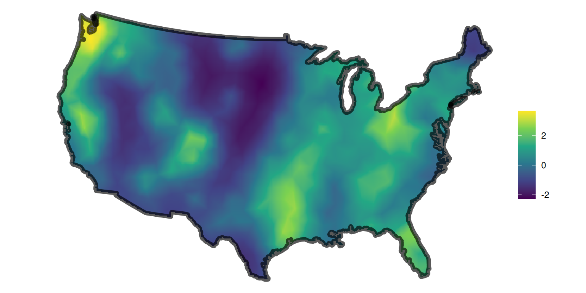
show_lambda(fit_sq, smesh = smesh_km, sf = us_km, clip = TRUE) + theme_void()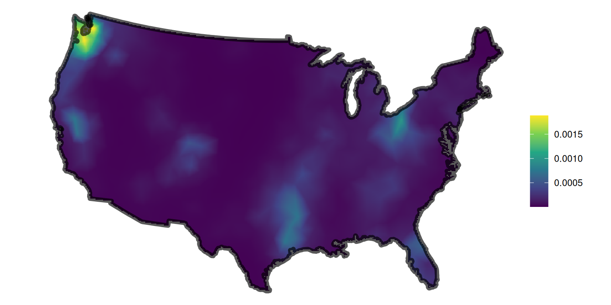
The hot spots (e.g., the Pacific Northwest) are clear. Remember, though, that these are reported sightings: the model cannot distinguish places where sasquatch are common from places where many people are out looking for them (Section 5.1.2).
5.3.2 Terrorism events in Iraq
The iraq_terrorism data (see ?sec-data) are the locations and dates of terrorism events in Iraq carried out by ISIL between 2013 and 2017. This example shows the full stelfi workflow for a region with an awkward boundary, compares stelfi with inlabru on several meshes, explores how sensitive the results are to the mesh, and includes covariates in the intensity. A spatiotemporal version is in Section 7.1.
Preparing the data
The event locations are projected to UTM zone 38N (EPSG:32638), which covers most of Iraq, and converted to kilometres. The boundary of Iraq is obtained from the rnaturalearth package and transformed in the same way.
data("iraq_terrorism", package = "stelfi")
## event locations (lon/lat) -> UTM zone 38N -> km
locs_km <- as.data.frame(sf::st_coordinates(sf::st_transform(iraq_terrorism, crs = 32638)) / 1000)
names(locs_km) <- c("x", "y")
## the boundary of Iraq in the same coordinates
iraq_sf <- rnaturalearth::ne_countries(country = "Iraq", scale = "medium", returnclass = "sf") |>
sf::st_transform(crs = 32638) |>
sf::st_union() ## collapse to a single polygon
iraq_sf_km <- sf::st_sf(geometry = sf::st_geometry(iraq_sf) / 1000)
## once in km the coordinates are just planar numbers, so drop the CRS
## so that the events, the boundary and the mesh are all treated consistently
sf::st_crs(iraq_sf_km) <- NA
points_km <- sf::st_as_sf(locs_km, coords = c("x", "y")) ## used by inlabruBuilding the meshes
Three meshes are built, each following the boundary of Iraq (boundary) and placed around the events, with a finer inner and coarser outer part (max.edge = c(inner, outer)).
mesh_args <- list(coarse = list(max.edge = c(60, 200), cutoff = 15),
medium = list(max.edge = c(40, 200), cutoff = 5),
fine = list(max.edge = c(10, 100), cutoff = 2))
meshes <- lapply(mesh_args, function(a) {
fmesher::fm_mesh_2d(loc = locs_km[, 1:2],
boundary = fmesher::fm_as_segm(iraq_sf_km),
max.edge = a$max.edge, cutoff = a$cutoff)
})
sapply(meshes, function(m) m$n) ## number of nodes in each meshcoarse medium fine
598 1568 11940 The medium mesh, the events, and the boundary of Iraq (blue) are shown below.
ggplot() +
geom_sf(data = mesh_2_sf(meshes$medium), fill = NA) +
geom_sf(data = iraq_sf_km, fill = NA, col = "blue", linewidth = 1) +
geom_sf(data = points_km, size = 0.5) +
theme_void()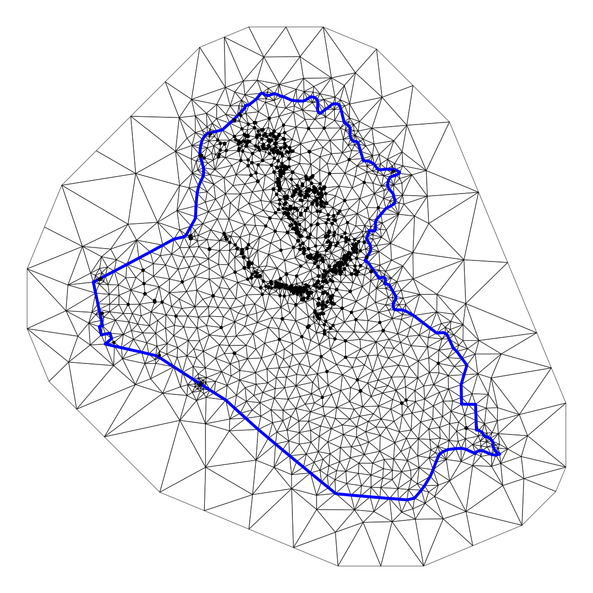
Fitting with stelfi
area_km2 <- as.numeric(sf::st_area(iraq_sf_km))
beta_start <- log(nrow(locs_km) / area_km2)
start <- c(beta = beta_start, log_tau = log(1), log_kappa = log(1))
fits_stelfi <- lapply(meshes, function(m) {
fit_lgcp(locs = locs_km, sf = iraq_sf_km, smesh = m, parameters = start)
})
get_coefs(fits_stelfi$medium) Estimate Std. Error
beta -10.4615767 0.39736153
log_tau 0.1693602 0.06063699
log_kappa -2.6639452 0.07788022
range 40.5958551 3.16161410
stdev 3.4180592 0.18938261The estimated random field and intensity surface (events per km\(^2\)) for the medium mesh:
get_fields(fits_stelfi$medium, meshes$medium) |>
show_field(smesh = meshes$medium, sf = iraq_sf_km, clip = TRUE) + theme_void()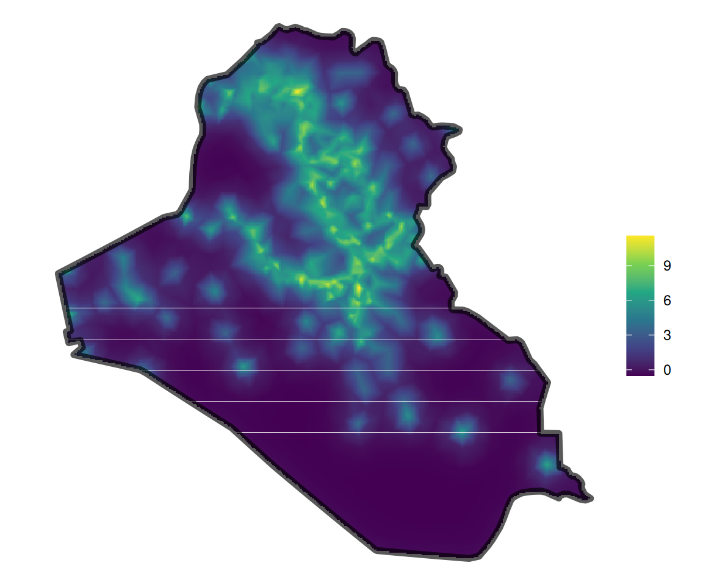
show_lambda(fits_stelfi$medium, smesh = meshes$medium, sf = iraq_sf_km, clip = TRUE) +
theme_void()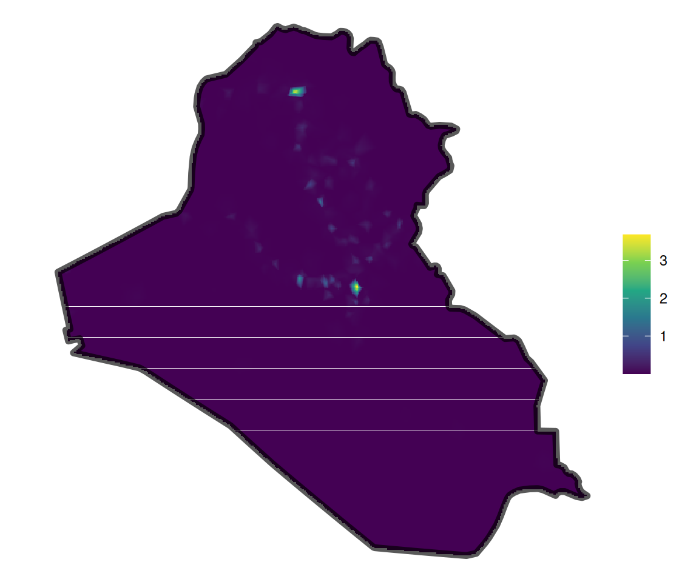
Comparing with inlabru
The same model is fitted using inlabru on the same three meshes, with weak penalised complexity priors (\(P(r < 5\text{ km}) = 0.01\) and \(P(\sigma > 10) = 0.01\)) and empirical Bayes (see Section 5.2).
fit_bru <- function(mesh) {
matern <- INLA::inla.spde2.pcmatern(mesh, prior.sigma = c(10, 0.01), prior.range = c(5, 0.01))
cmp <- geometry ~ mySmooth(geometry, model = matern) + Intercept(1)
inlabru::lgcp(cmp, data = points_km, samplers = iraq_sf_km,
domain = list(geometry = mesh),
options = inlabru::bru_options(
control.inla = list(int.strategy = "eb", strategy = "gaussian",
diagonal = 1e-4, control.vb = list(enable = FALSE))))
}
fits_inlabru <- lapply(meshes, fit_bru)The table gives the estimates (standard error for stelfi, posterior standard deviation for inlabru, in brackets) for each mesh. Because the coordinates are in km in both, \(\beta_0\) is the log intensity per km\(^2\) and \(r\) is in km.
| Mesh | Package | \(\beta_0\) | \(r\) | \(\sigma\) |
|---|---|---|---|---|
| coarse | stelfi | -9.554 (0.514) | 87.421 (10.276) | 2.96 (0.239) |
| coarse | inlabru | -8.035 (0.534) | 120.815 (15.646) | 2.867 (0.287) |
| medium | stelfi | -10.462 (0.397) | 40.596 (3.162) | 3.418 (0.189) |
| medium | inlabru | -8.287 (0.308) | 50.181 (4.288) | 3.226 (0.206) |
| fine | stelfi | -11.672 (0.207) | 8.423 (0.568) | 5.729 (0.309) |
| fine | inlabru | -8.664 (0.244) | 28.141 (1.661) | 4.058 (0.196) |
When reading the table look for (1) agreement between packages for a given mesh, and (2) agreement across meshes for a given package.
Between packages. For the coarse and medium meshes the two packages tell a similar story: a field with a large standard deviation (around 3, so the intensity varies by orders of magnitude across Iraq) and a range of tens of kilometres, although the inlabru range is somewhat larger. The intercepts differ more. This is partly because the packages approximate the integral of the intensity over the study region differently (stelfi assigns each event and each piece of area to its nearest mesh node, inlabru uses integration points), and partly because the intercept is only weakly identified when the field is this variable. The differences are largest for the fine mesh, where the two approximations differ most.
Across meshes. The estimates do not stabilise: as the mesh gets finer the estimated range gets smaller and the standard deviation larger, for both packages.
Sensitivity to the mesh
The number of nodes, and so the computational cost, increases a lot from the coarse to the fine mesh. The intensity surfaces estimated by stelfi using the three meshes are shown below.
lambdas <- lapply(names(meshes), function(m) {
show_lambda(fits_stelfi[[m]], smesh = meshes[[m]], sf = iraq_sf_km, clip = TRUE) +
theme_void() + ggtitle(m) + theme(legend.position = "none")
})
patchwork::wrap_plots(lambdas, nrow = 1)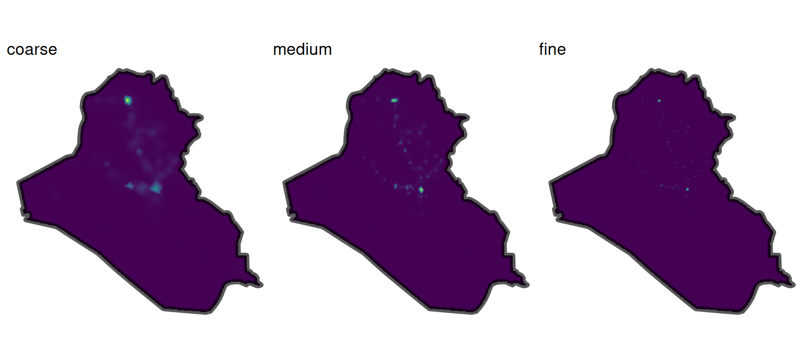
If the mesh is adequate the estimates, and the large scale pattern of the intensity, should be similar for all three meshes; if the range and standard deviation change noticeably then the coarser mesh cannot represent the field. Here the broad pattern (the hot spots around Baghdad and along the Tigris and Euphrates) is the same, but the estimated range keeps shrinking as the mesh is refined. The reason is the data: attacks are concentrated in particular towns and cities, so there is spatial structure at every scale down to a few kilometres, and whatever mesh is used the field picks up variation down to the smallest scale the mesh can represent. In this situation:
- the range should be interpreted as “the scale of variation resolved at this mesh”, and the mesh reported alongside the results;
- choose the mesh to match the scale of the question being asked (e.g., differences between regions versus between neighbourhoods); and
- consider whether the fine scale clustering is better explained by covariates (e.g., the locations of towns, population density) or by events triggering further events (Chapter 8).
Including covariates
Covariates are included in the log intensity, \(\lambda(s) = \text{exp}(\beta_0 + \beta_1 x_1(s) + ... + G(s))\), using the covariates argument of fit_lgcp(). The covariates must be a matrix with one column per covariate and one row per mesh node, and the starting value beta becomes a vector: the intercept followed by one coefficient per covariate. It is a good idea to standardise covariates (using scale()), so that the coefficients are the change in log intensity per standard deviation increase in the covariate and the optimiser works with parameters on a similar scale. The medium mesh is used below.
smesh <- meshes$mediumDistance to Baghdad. Here the covariate is the distance (in km) from each mesh node to Baghdad (33.30°N, 44.40°E).
baghdad <- sf::st_as_sf(data.frame(lon = 44.40, lat = 33.30), coords = c("lon", "lat"), crs = 4326) |>
sf::st_transform(crs = 32638)
baghdad_km <- sf::st_coordinates(baghdad) / 1000
mesh_coords <- smesh$loc[, 1:2]
baghdad_dist <- sqrt((mesh_coords[, 1] - baghdad_km[1])^2 + (mesh_coords[, 2] - baghdad_km[2])^2)
baghdad_scaled <- as.matrix(scale(baghdad_dist))
sd(baghdad_dist) ## km per unit of the scaled covariate[1] 142.8089fit_baghdad <- fit_lgcp(locs = locs_km, sf = iraq_sf_km, smesh = smesh,
parameters = list(beta = c(beta_start, 0), log_tau = log(1), log_kappa = log(1)),
covariates = baghdad_scaled)
get_coefs(fit_baghdad) Estimate Std. Error
beta -10.1442624 0.34778483
beta -1.3433509 0.28134940
log_tau 0.1179046 0.06460445
log_kappa -2.5396546 0.07987871
range 35.8511413 2.86374286
stdev 3.1779551 0.16668768The second beta is the change in the log intensity per standard deviation (see above, in km) increase in distance from Baghdad, so \(\text{exp}(\hat{\beta}_1)\) is the multiplicative change in the intensity. A negative coefficient means events are more intense closer to Baghdad. Note that the mesh extends beyond the boundary of Iraq, so the standardisation uses nodes outside the country too.
Population density. In these data population density is only recorded at the event locations, not at the mesh nodes, so it has to be interpolated to the mesh nodes. Here inverse distance weighting (gstat::idw()) is used.
points_pop <- points_km
points_pop$popdensity <- iraq_terrorism$popdensity
mesh_sf <- sf::st_as_sf(as.data.frame(smesh$loc[, 1:2]) |> setNames(c("x", "y")), coords = c("x", "y"))
idw_fit <- gstat::idw(formula = popdensity ~ 1, locations = points_pop,
newdata = mesh_sf, debug.level = 0)
scaled_popdensity <- as.matrix(scale(idw_fit$var1.pred))
fit_pop <- fit_lgcp(locs = locs_km, sf = iraq_sf_km, smesh = smesh,
parameters = list(beta = c(beta_start, 0), log_tau = log(1), log_kappa = log(1)),
covariates = scaled_popdensity)
get_coefs(fit_pop) Estimate Std. Error
beta -9.36865654 0.27424276
beta -1.58631396 0.14909077
log_tau 0.05934407 0.07069666
log_kappa -2.36289605 0.08056003
range 30.04261333 2.42023386
stdev 2.82367676 0.13280817
Note
Care is needed when interpreting this coefficient. Because population density is only known at the events, the interpolated surface is informed only by where events happened, not by where people live in general, so it is not an independent description of the population. A population density raster covering the whole of Iraq would be preferable. It is also worth remembering that the random field can absorb spatial structure shared with a covariate (spatial confounding), so check the standard error of the coefficient, and compare the model with and without the covariate (e.g., by looking at how much the estimated field changes).
5.4 Goodness-of-fit
A natural question is whether point patterns simulated from the fitted model look like the observed pattern. This can be checked by comparing summary functions of the observed pattern with those of patterns simulated from the fitted model, using spatstat (Baddeley, Rubak, and Turner (2015)). Two nearest-neighbour summaries are used here:
- the \(G\) function, the distribution function of the distance from a typical event to its nearest other event. For a clustered pattern \(G(r)\) rises faster than for a completely random (Poisson) pattern since events tend to have a close neighbour; and
- the \(F\) function (empty space function), the distribution function of the distance from an arbitrary location to the nearest event. For a clustered pattern \(F(r)\) rises more slowly than for a Poisson pattern since there are large empty gaps between clusters.
If the fitted LGCP is adequate, the observed curves should lie within the envelope formed by the curves of the simulated patterns. Distances must be measured in planar coordinates, so this is done for the sasquatch model (Section 5.3.1), which was fitted in km.
5.4.1 Preparing the observed pattern
The observed events are converted to a spatstat point pattern (ppp) within the study region (owin). Some sightings share exactly the same location, which gives nearest-neighbour distances of zero, so the pattern is jittered slightly using rjitter().
library(spatstat.geom)
library(spatstat.explore)
us_window <- as.owin(us_km)
set.seed(1)
obs_ppp <- ppp(x = locs_sq$x, y = locs_sq$y, window = us_window)
obs_ppp <- rjitter(obs_ppp, retry = TRUE)5.4.2 Simulating from the fitted model
The function below simulates one point pattern from the fitted LGCP using sim_lgcp() and the estimated parameters. This simulates a new random field each time (the model is checked as a whole, not just the estimated field). sim_lgcp() returns the number of events per mesh node, so each node is repeated as many times as it has events and the resulting pattern is jittered (by half the mesh cutoff) so that events are spread around the node.
generate_simulated_ppp <- function() {
sim <- sim_lgcp(sf = us_km, smesh = smesh_km,
parameters = c(beta = unname(coefs["beta", 1]),
log_tau = unname(coefs["log_tau", 1]),
log_kappa = unname(coefs["log_kappa", 1])))
if (sum(sim$y) < 2) return(NULL) ## need two events for nearest-neighbour distances
idx <- rep(1:nrow(smesh_km$loc), times = sim$y)
sim_ppp <- ppp(x = smesh_km$loc[idx, 1], y = smesh_km$loc[idx, 2],
window = us_window, check = FALSE)
rjitter(sim_ppp, radius = 50, retry = TRUE)
}5.4.3 Simulation envelopes
A simulation envelope gives, for each distance \(r\), the range (here the minimum and maximum) of the summary function over many simulated patterns. With 39 simulations a pointwise envelope based on the minimum and maximum corresponds to a test with significance level \(2/(39 + 1) = 0.05\) at each \(r\) (more simulations, e.g., 99, are preferable but take longer). Passing the list of LGCP simulations to the simulate argument of envelope() is important, otherwise the envelope is formed from completely random patterns and instead tests whether there is any spatial structure at all.
set.seed(3)
sim_list <- lapply(1:39, function(i) generate_simulated_ppp())
sim_list <- Filter(Negate(is.null), sim_list)
g_envelope <- envelope(Y = obs_ppp, fun = Gest, simulate = sim_list,
nsim = length(sim_list), savefuns = TRUE, verbose = FALSE)
plot(g_envelope, main = "Sasquatch LGCP: G function", xlab = "Distance (km)", legend = FALSE)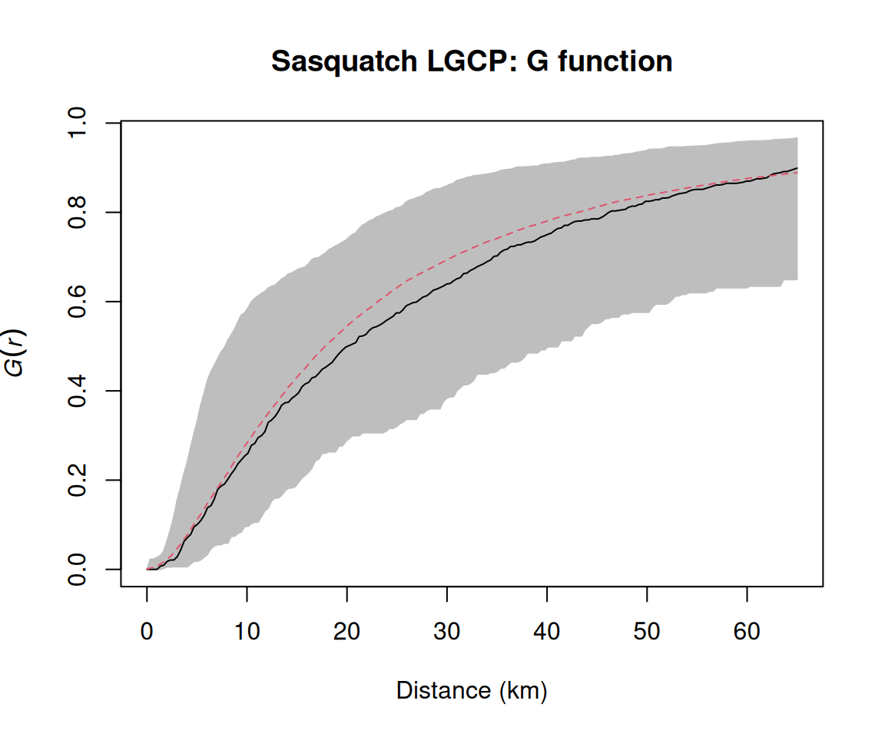
f_envelope <- envelope(Y = obs_ppp, fun = Fest, simulate = sim_list,
nsim = length(sim_list), savefuns = TRUE, verbose = FALSE)
plot(f_envelope, main = "Sasquatch LGCP: F function", xlab = "Distance (km)", legend = FALSE)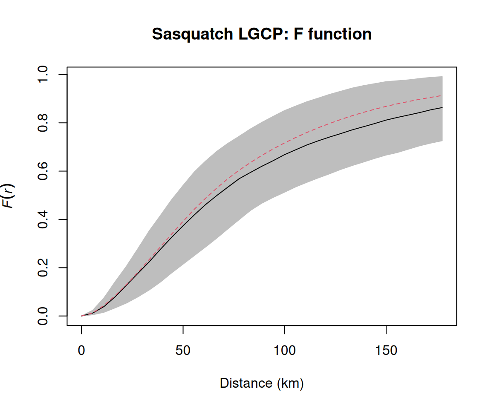
In each plot the solid black line is the observed function, the dashed red line is the mean of the simulated patterns, and the grey band is the envelope. Where the observed curve leaves the band the fitted model is not reproducing that aspect of the data. Points to bear in mind when reading these plots:
- at distances smaller than the mesh resolution (here about 100 to 200 km) the simulated patterns are only as realistic as the jittering used to spread events around their mesh node, so differences at very short distances say more about the mesh than about the model; and
- the \(G\) function is about how close events are to each other. If events are much closer together than the model expects (more short nearest-neighbour distances), this suggests clustering at a finer scale than the field can capture, e.g., because events trigger one another (Chapter 8) or because of duplicated reports.
5.5 Spatiotemporal LGCP
5.5.1 The model and your data
If the event locations are recorded over a period of time, the spatial pattern may change over time. A spatiotemporal LGCP allows this by having a separate random field at each of a set of time knots \(t_1, t_2, ..., t_K\):
\[\lambda_k(s) = \text{exp}(\beta_0 + G_k(s)),\]
where the fields are linked over time by a first order autoregressive (AR(1)) process,
\[G_k(s) = \rho\, G_{k-1}(s) + \epsilon_k(s),\]
and the \(\epsilon_k(s)\) are independent random fields. All of the fields share the same range and standard deviation. The new parameter is \(\rho\) (\(-1 < \rho < 1\)), the correlation between the fields at consecutive time knots: \(\rho\) close to 1 means the spatial pattern of events is very persistent over time, \(\rho\) close to 0 means the pattern at one knot is almost unrelated to the pattern at the previous one. get_coefs() reports rho along with the parameters of the spatial model, and atanh_rho is the transformed parameter used when giving starting values.
To fit the model you need, in addition to a spatial model (Section 5.1.2):
- a column
tinlocsgiving the time of each event; and - a temporal mesh
tmesh, built usingfmesher::fm_mesh_1d()with the knots as its argument, e.g.,fmesher::fm_mesh_1d(0:5)for knots at \(t = 0, 1, ..., 5\).
Each event is assigned to its nearest time knot, so knot \(t_k\) covers the time period from halfway between \(t_{k-1}\) and \(t_k\) to halfway between \(t_k\) and \(t_{k+1}\), and the first and last knots cover only half a period. Things to be aware of:
- The times and knots must be on the same scale. For example, if
tis in years since the start of the study, the knots should be too. Checktmesh$locto see the knots that were created. - Every knot must have some events in the period it covers, and no event can be later than the last knot. For example, with yearly data starting at \(t = 0\) and finishing within year 5, use continuous (decimal) times and knots
0:5, so the last knot covers the final half year. (The current version ofstelfican crash, rather than give an error, if this is not the case.) - Sort the data by time before fitting.
- The cost grows with the number of knots, since there is a field at every knot: roughly the number of mesh nodes times the number of knots. A coarser spatial mesh than for a purely spatial model is often needed.
Warning
In the current version of stelfi, spatiotemporal models should be fitted using a mesh that does not extend beyond the study region, i.e., built with the study region as its boundary and a single value for max.edge, so that every mesh node has some area of the study region associated with it. Using a mesh with an outer extension (as is usual for spatial models, Section 5.1.1) gives badly biased estimates. You can check this with sum(get_weights(smesh, sf)$weights == 0), which should be 0.
5.5.2 A simulated example
Data were simulated from a spatiotemporal LGCP within a disc of radius 2 over the time period \([0, 5)\), with \(\beta_0 = 2\), range \(r = 1\), standard deviation \(\sigma = 1\), and \(\rho = 0.7\), with one field per unit of time. The data are a data frame of 891 events with columns x, y, and t:
head(locs) x y t
1 1.9298853 0.31397382 0.008389111
2 -0.1897221 1.06251820 0.009234515
3 1.7794098 0.41180309 0.010330225
4 1.6102736 0.02557874 0.011357767
5 0.2621431 -0.15527212 0.018003215
6 1.7512718 0.49230152 0.034940886The spatial mesh follows the boundary of the study region with no outer extension (see the warning above) and the temporal mesh has knots at \(0, 1, ..., 5\).
disc_sf <- sf::st_sf(geometry = sf::st_geometry(sf::st_as_sf(spatstat.geom::disc(radius = 2))))
smesh <- fmesher::fm_mesh_2d(boundary = fmesher::fm_as_segm(disc_sf), max.edge = 0.2, cutoff = 0.05)
sum(get_weights(smesh, disc_sf)$weights == 0) ## no nodes outside the region[1] 0tmesh <- fmesher::fm_mesh_1d(0:5)
tmesh$loc[1] 0 1 2 3 4 5fit_st <- fit_lgcp(locs = locs, sf = disc_sf, smesh = smesh, tmesh = tmesh,
parameters = c(beta = 1, log_tau = log(1), log_kappa = log(1), atanh_rho = 0))
stelfi_st <- get_coefs(fit_st)
stelfi_st Estimate Std. Error
rho 0.5998841 0.07272397
beta 1.8393273 0.32568893
log_tau -2.1073093 0.10586796
log_kappa 0.7947107 0.13262724
range 1.2776342 0.16944910
stdev 1.0482127 0.09213091The same model can be fitted using inlabru, by giving the field a group (the time) with an AR(1) control.group, and including time in the domain of the point process.
matern <- INLA::inla.spde2.pcmatern(smesh, prior.range = c(0.1, 0.01), prior.sigma = c(5, 0.01))
pts <- sf::st_as_sf(locs, coords = c("x", "y"))
cmp <- ~ field(geometry, model = matern, group = t, group_mapper = bm_fmesher(tmesh),
control.group = list(model = "ar1")) + Intercept(1)
fit_bru_st <- lgcp(cmp, data = pts, samplers = disc_sf,
domain = list(geometry = smesh, t = tmesh),
formula = geometry + t ~ field + Intercept,
options = bru_options(control.inla = list(int.strategy = "eb")))
bru_st <- rbind(fit_bru_st$summary.fixed[, 1:2], fit_bru_st$summary.hyperpar[, 1:2])
bru_st mean sd
Intercept 1.9663577 0.43998299
Range for field 1.7118879 0.24379425
Stdev for field 1.1097761 0.11783808
GroupRho for field 0.6048413 0.07667944| \(\beta_0\) | \(r\) | \(\sigma\) | \(\rho\) | |
|---|---|---|---|---|
| Truth | 2.0 | 1.0 | 1.0 | 0.7 |
| stelfi | 1.839 (0.326) | 1.278 (0.169) | 1.048 (0.092) | 0.6 (0.073) |
| inlabru | 1.966 (0.44) | 1.712 (0.244) | 1.11 (0.118) | 0.605 (0.077) |
Both packages give similar estimates and recover the true values reasonably well. The estimated field at any time knot can be extracted using get_fields() (which, with tmesh, returns a matrix with one column per knot) and the intensity plotted using show_lambda() with the timestamp argument (the index of the knot).
plots <- lapply(c(1, 3, 6), function(k) {
show_lambda(fit_st, smesh = smesh, sf = disc_sf, tmesh = tmesh, timestamp = k, clip = TRUE) +
theme_void() + ggtitle(paste("t =", tmesh$loc[k]))
})
patchwork::wrap_plots(plots, nrow = 1)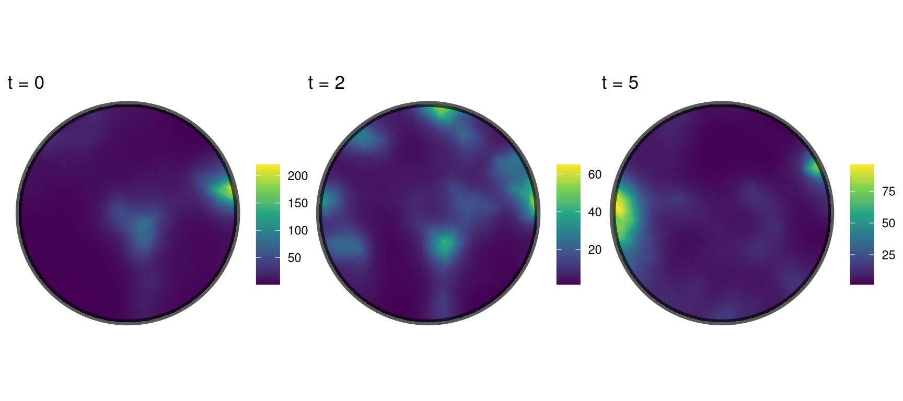
5.5.3 An applied example: terrorism events in Iraq by year
The iraq_terrorism data (Section 5.3.2) also record the year, month and day of each event, so the intensity can be allowed to change over time. Here time is measured in years since the start of 2013 (as a decimal, using the month and day) and there is one knot per year.
locs_st <- as.data.frame(sf::st_coordinates(sf::st_transform(iraq_terrorism, crs = 32638)) / 1000)
names(locs_st) <- c("x", "y")
locs_st$t <- (iraq_terrorism$iyear - 2013) + (iraq_terrorism$imonth - 1) / 12 +
(iraq_terrorism$iday - 1) / 365
locs_st <- locs_st[order(locs_st$t), ]
range(locs_st$t)[1] 0.2965753 4.9988584The spatial mesh follows the boundary of Iraq with no outer extension, and is coarser than for the spatial model because there are six fields to estimate. The temporal knots are at \(t = 0, 1, ..., 5\) (the start of each year), so the final knot covers the second half of 2017.
smesh_st <- fmesher::fm_mesh_2d(boundary = fmesher::fm_as_segm(iraq_sf_km), max.edge = 50, cutoff = 20)
c(nodes = smesh_st$n, outside = sum(get_weights(smesh_st, iraq_sf_km)$weights == 0)) nodes outside
496 0 tmesh_st <- fmesher::fm_mesh_1d(0:5)Starting values matter for this model. For the intercept, the log of the average number of events per km\(^2\) per year is a sensible start. For the range a starting value of around 300 km is used (\(\kappa = \sqrt{8}/300\)).
n_years <- 5
start <- c(beta = log(nrow(locs_st) / (area_km2 * n_years)),
log_tau = log(0.1), log_kappa = log(sqrt(8) / 300), atanh_rho = 0.2)
fit_iraq_st <- fit_lgcp(locs = locs_st, sf = iraq_sf_km, smesh = smesh_st, tmesh = tmesh_st,
parameters = start)
coefs_st <- get_coefs(fit_iraq_st)
coefs_st Estimate Std. Error
rho 0.9220853 0.01286857
beta -11.5955606 0.56488818
log_tau 1.2540996 0.08731190
log_kappa -3.5544586 0.09573922
range 98.9069365 9.46927254
stdev 2.8146752 0.19977800The estimated correlation between the fields of consecutive years is \(\hat{\rho} =\) 0.92, so the spatial pattern of events is very persistent from year to year. The estimated intensity in each year is plotted below.
plots <- lapply(1:6, function(k) {
show_lambda(fit_iraq_st, smesh = smesh_st, sf = iraq_sf_km, tmesh = tmesh_st,
timestamp = k, clip = TRUE) +
theme_void() + ggtitle(paste("t =", tmesh_st$loc[k]))
})
patchwork::wrap_plots(plots, nrow = 2)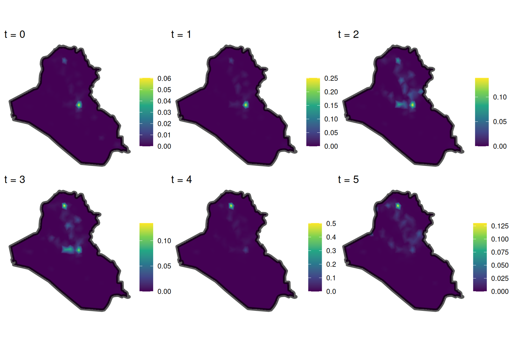
If the model does not converge, things to try are a coarser spatial mesh, fewer knots, different starting values (in particular beta, log_tau and atanh_rho), or fitting a spatial LGCP (Section 5.3.2) to each year first to get an idea of sensible values for \(\beta_0\), \(\tau\), and \(\kappa\).
5.5.4 Goodness-of-fit
The simulation envelopes of Section 5.4 can be used for a single time period. Below a slightly different check is used: rather than simulating new random fields, events are simulated from the estimated intensity for one knot (an inhomogeneous Poisson process), and the \(G\) function of these is compared with that of the observed events in the corresponding period. This asks whether, given the estimated intensity surface, the events are more clustered than expected. Here the knot at \(t = 2\) (mid 2014 to mid 2015) is checked.
knot <- 3 ## the index of the knot at t = 2
in_period <- abs(locs_st$t - tmesh_st$loc[knot]) < 0.5
obs <- locs_st[in_period, ]
iraq_window <- as.owin(iraq_sf_km)
set.seed(1)
obs_ppp_st <- rjitter(ppp(obs$x, obs$y, window = iraq_window), retry = TRUE)Warning: 1 point was rejected as lying outside the specified windowWarning: data contain duplicated points## estimated log intensity at the mesh nodes for this knot
eta <- coefs_st["beta", 1] + get_fields(fit_iraq_st, smesh_st, tmesh_st)[, knot]
## simulate from the estimated intensity (per km^2 per year) by thinning
sim_from_fitted <- function() {
bb <- sf::st_bbox(iraq_sf_km)
lmax <- exp(max(eta))
n0 <- rpois(1, lmax * (bb["xmax"] - bb["xmin"]) * (bb["ymax"] - bb["ymin"]))
cand <- ppp(runif(n0, bb["xmin"], bb["xmax"]), runif(n0, bb["ymin"], bb["ymax"]),
window = owin(bb[c("xmin", "xmax")], bb[c("ymin", "ymax")]))
cand <- cand[iraq_window]
lambda <- exp(as.vector(fmesher::fm_basis(smesh_st, loc = cbind(cand$x, cand$y)) %*% eta))
cand[runif(cand$n) < lambda / lmax]
}
sims <- lapply(1:39, function(i) sim_from_fitted())
g_env_st <- envelope(obs_ppp_st, fun = Gest, simulate = sims, nsim = 39, verbose = FALSE)plot(g_env_st, main = "Iraq, t = 2: G function", xlab = "Distance (km)", legend = FALSE)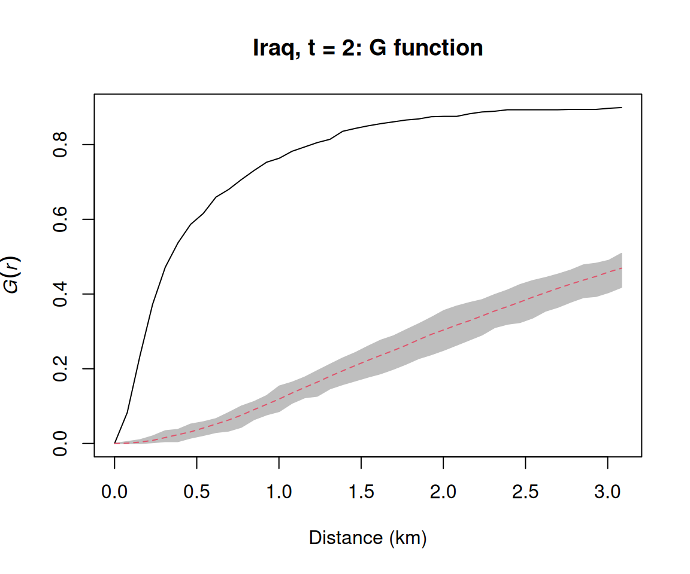
The observed \(G\) function lies well above the envelope at short distances: many events are much closer to another event than would be expected given the estimated intensity. This is not surprising: the mesh (and the knots) can only describe variation in intensity at scales of tens of kilometres and a year, whereas attacks are often concentrated in particular towns and occur in bursts. A finer mesh would help, but this kind of small scale clustering in space and time is also exactly what a self-exciting model is designed to capture, see Chapter 8.